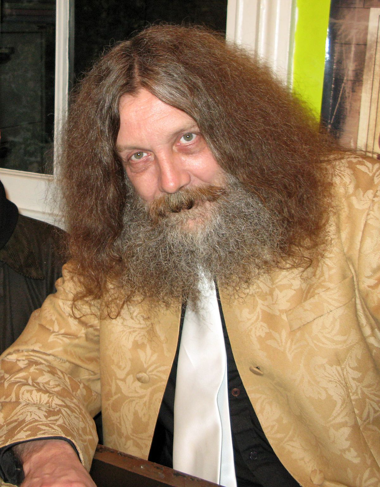
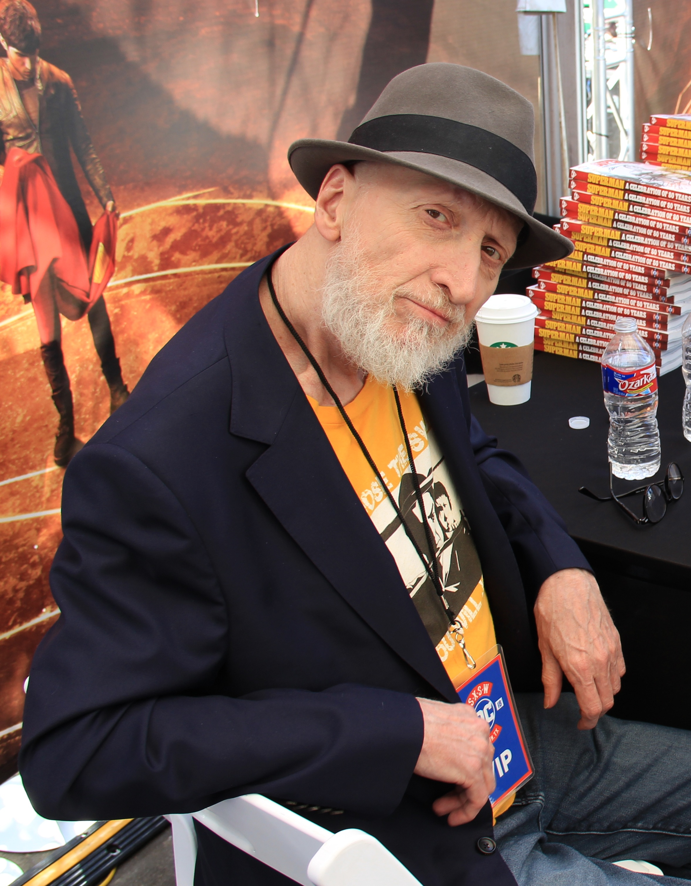
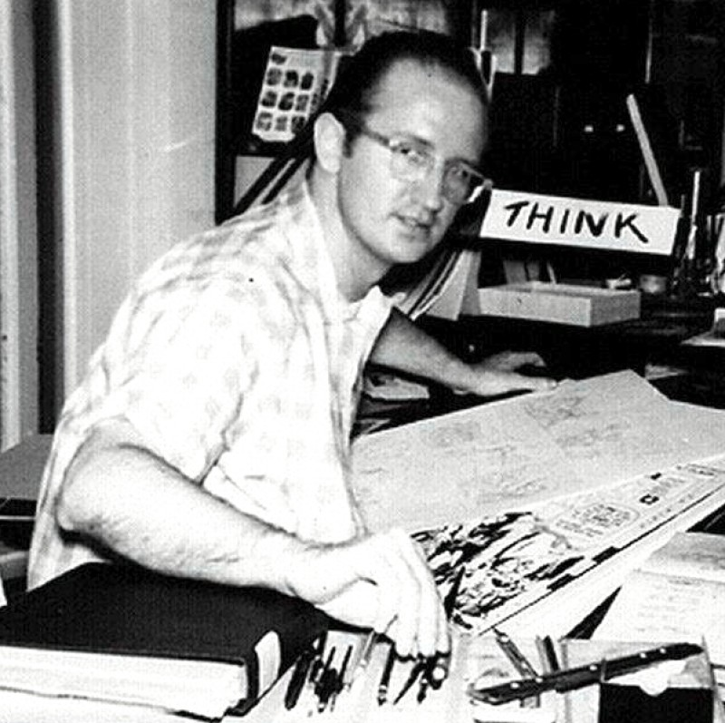
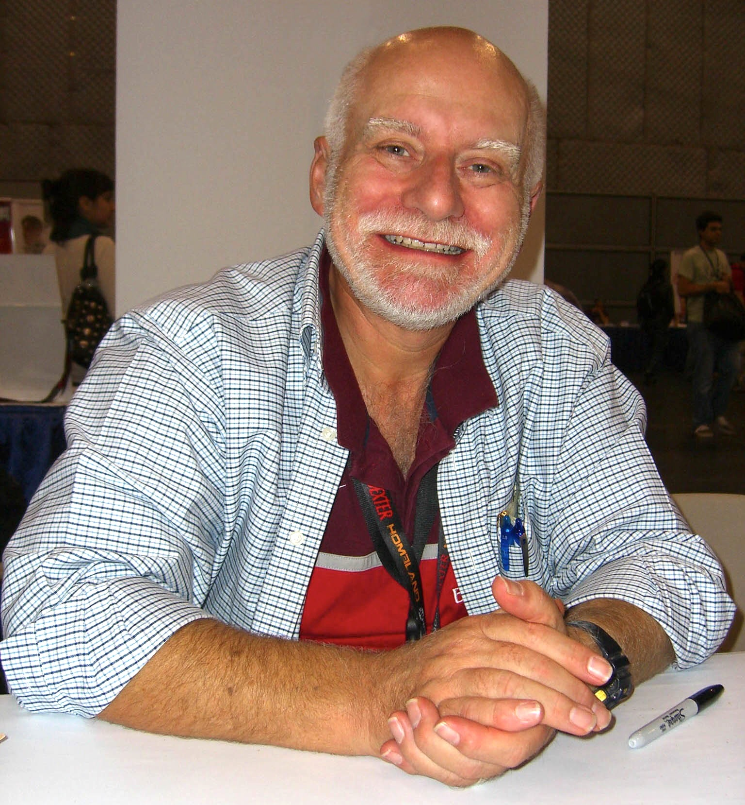
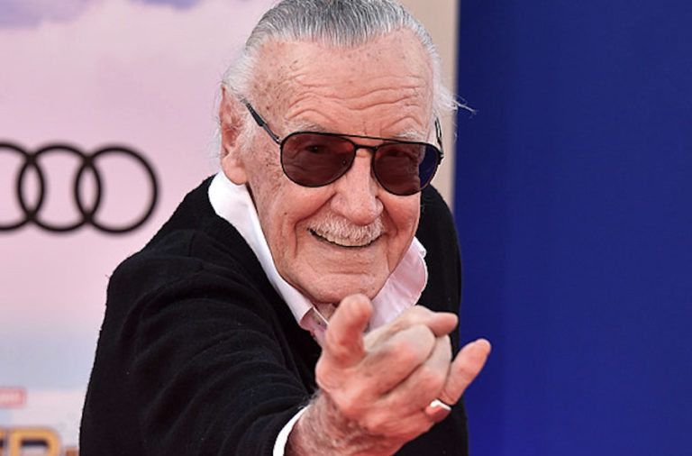
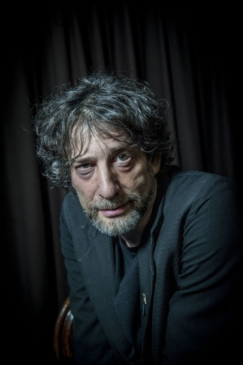
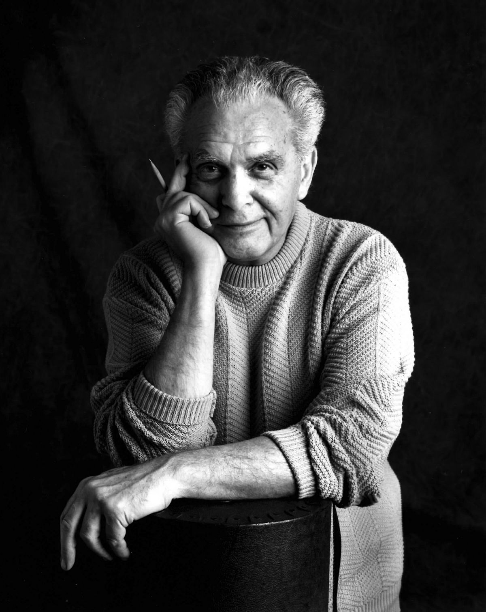
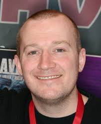
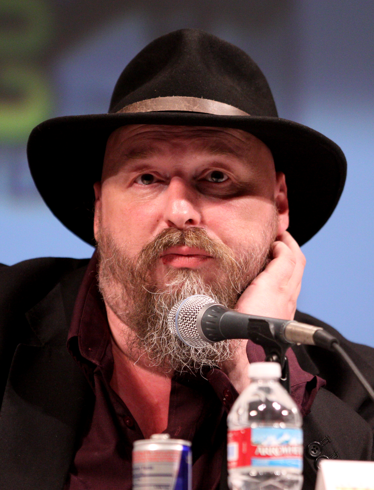
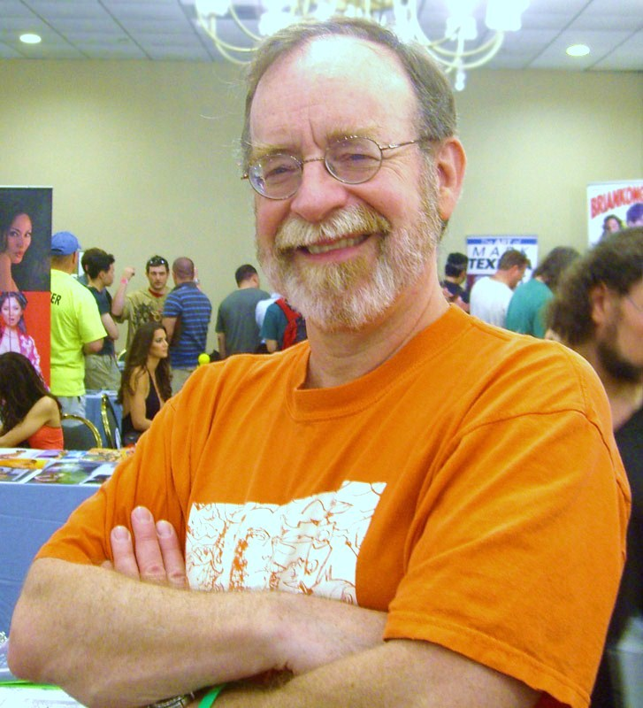

Los creadores de la magia
Ellos han logrado que el cómic sea catalogado como una fascinante expresión artística tanto a nivel gráfico como literario.
Quizás en algún momento de tu vida hayas sido un escritor de cómics. Ya sea creando un superhéroe en tu libreta de tareas o dibujando a un salvador del mundo
para un trabajo de escuela, muchos han sido seducidos por la fantasía de poseer poderes sobrehumanos para derrotar a un grupo de villanos o a la simple monotonía
de la vida diaria.
Pero, ¿quiénes son las mentes maestras que han revolucionado la industria editorial de los cómics y qué han hecho para que esta fuente de lectura y entretenimiento
sea catalogada como un nuevo arte? Conócelas en este artículo.

Alan Moore
Alan Moore (Northampton, 18 de noviembre de 1953) es un escritor británico y guionista de cómics, labor esta última en la que ha destacado por sus trabajos
reconocidos por la crítica y popularmente aclamados como Watchmen, V de Vendetta, From Hell y The League of Extraordinary Gentlemen. Ha sido catalogado como el
"mejor escritor de historietas de la historia".
Trabajó primero para el mercado de su país en revistas como 2000AD o Warrior. A partir de 1984 trabajó en el mercado estadounidense, principalmente para DC Comics.
Desde mediados de la década de los 90 trabaja mayormente en editoriales independientes a ambos lados del Atlántico.
Su pintoresco pasado, aunado a una actitud con ciertos matices misantrópicos y su autoproclamada conversión en mago del caos, lo han vuelto célebre hasta el
punto de convertirse en un ícono. Políticamente se declara anarquista, ideología que refleja en algunas de sus obras.
El 9 de septiembre de 2016, Moore anunció que se retiraba de la industria del cómic.
Tras ser expulsado del colegio, Moore pasó varios años trabajando antes de iniciar su carrera como historietista a finales de los 70. Hizo dibujos underground
para publicaciones de revistas musicales como Sounds y la NME, bajo el seudónimo de Curt Vile (juego de palabras con el nombre del compositor Kurt Weill), a
veces colaborando con su socio Steve Moore, con el que solo compartía amistad y apellido. Bajo el seudónimo de Jill de Ray (otra manera de pronunciar el nombre
de Gilles de Rais, asesino en serie) empezó una publicación llamada Maxwell the Magic Cat, para el periódico Northants Post, la cual duró hasta 1986. A Moore le
hubiera encantado seguir publicando las aventuras de Maxwell, pero terminó de publicarlo en el momento que el periódico publicó una carta del director de
carácter homófobo.
Decidido a no ser dibujante, sino guionista, proporcionó guiones para la Marvel UK, 2000 AD y Warrior. Sus primeros guiones cortos fueron para la revista Doctor
Who Magazine y Star Wars Weekly, antes de saltar a la fama con su primer proyecto importante Captain Britania (Capitán Britania en España) junto a Alan Davis.
Empezó a trabajar con 2000 AD a principios de los 80, cuando presentó el proyecto de un guion que impresionó al subeditor Alan Grant. El guion fue para Judge
Dredd (El juez Dredd en España), y también participó en el guion de Future Shocks. Grant recuerda que cuando recibió el guion de Alan Moore, era demasiado largo
para su publicación, pero que no encontró la manera de cortarlo sin desgraciarlo, a lo que concluyó: «this guy's a really fucking good writer» («este chico es
un escritor jodidamente bueno»). Finalmente le pidió a Moore que lo recortara él mismo, y le compró el guion reducido. A partir de ese momento, Moore vendió
durante esos tres años unos cincuenta guiones de Future Shocks y Time Twister para la revista 2000 AD con cada vez más regularidad.
Coincidiendo con la elaboración de Captain Britain para Marvel UK y varios guiones para Warrior, Moore empezó a proyectar series más largas para 2000 AD. En
1983 salió a la luz Skizz, un cómic de ciencia ficción (le pidieron a Moore que hiciera una adaptación a su estilo de la película E.T., a lo que presentó Skizz,
diciendo que su versión «le debía mucho a Alan Bleasdale», escritor de guiones de series televisivas inglesas) junto con el dibujante Jim Baikie. Moore escribió
también una historia autoconclusiva protagonizada por D.R. and Quinch (una serie de ciencia ficción con personajes de la revista National Lampoon O.C. and
Stiggs, descritos por Alan Moore como «Continuando con la tradición de Daniel el Travieso pero dándole poderes termonucleares») junto con su compañero dibujante
Alan Davis. Considerada como su obra culminante en la revista 2000 AD (sin ser un éxito inmediato), The Ballad of Halo Jones fueron las primeras series en el
cómic en estar basadas alrededor de un personaje femenino, cocreado con el dibujante Ian Gibson.
Aunque los trabajos de Moore en 2000 AD estuvieran entre las publicaciones más importantes de la revista, Moore empezó a preocuparse por la falta de derechos de
autor en los cómics ingleses. En 1985, habló con el fanzine Arkensword y notificó que dejaba de publicar para la editorial inglesa IPC (editorial a la cual
pertenecía 2000 AD), «básicamente porqué IPC me ha evitado con mentiras, engaños o en general, me ha tratado como la mierda». Alan Moore reunió a otros artistas
del cómic para contestar en contra de la venta masiva de sus derechos de autor. Y en 1986 dejó de escribir para 2000 AD parando la producción del proyecto de
futuros cómics Halo Jones. Moore da a conocer sus principios, particularmente sobre los derechos de autor y su posesión, más adelante rompería más tratos con
otras editoriales durante su carrera.
De su trabajo durante este periodo, es sin duda su Marvelman (más tarde rebautizado como Miracleman por razones legales) en Warrior el que sedujo más a la
crítica. Marvelman era una nueva visión del superhéroe olvidado de los años 50, dibujado primero por Garry Leach y posteriormente por Alan Davis. Moore se inició
en el proyecto de V for Vendetta, una aventura pulp sobre un anarquista extravagante que se viste como Guy Fawkes y se enfrenta a un futuro gobierno fascista
británico, ilustrado por David Lloyd; y The Bojeffries Saga, una comedia sobre una familia de vampiros y hombres lobo pertenecientes a la clase trabajadora
inglesa, dibujada por Steve Parkhouse. La revista Warrior cerró antes de que estas fuesen concluida, pero Alan tenía permiso para continuar sus obras con otras
editoriales.
El trabajo del Moore inglés llamó la atención del editor de DC Comics Len Wein, quien lo contrató en 1983 para escribir Swamp Thing, un cómic de monstruos con
una fórmula condenada a producir pocas ventas. Moore, con los dibujantes Stephen R. Bissette, Rick Veitch y John Totleben, deconstruyeron y reimaginaron el
personaje, escribiendo unas series de historias experimentales que trataban asuntos sociales y del medioambiente junto una trama de terror y fantasía, apoyada
en la información de la cultura de Luisiana, lugar donde se producían los hechos de la historia. Moore resucitó muchos de los personajes mágicos y sobrenaturales
que tenía DC criando polvo, como por ejemplo The Spectre, The Demon, The Phantom Stranger o Deadman, e introdujo a John Constantine, un mago inglés de la clase
trabajadora, cogiendo de modelo al cantante Sting. Este más tarde tendría sus propias series, Hellblazer, quizás la serie continua más larga publicada por DC
con Vertigo.
La carrera de Moore con Swamp Thing fue un éxito tanto de crítica como en las ventas, y animó a DC a reclutar guionistas en Europa, sobre todo en Inglaterra,
del nivel de Grant Morrison, Jamie Delano, Peter Milligan y Neil Gaiman para escribir relatos al estilo de Alan Moore y reciclar personajes olvidados. Los
títulos que siguieron asentaron las bases de lo que sería el estilo Vertigo. Moore acrecentó la productividad creando un cómic de Superman en 1985 (For the
Man Who Has Everything), su segunda parte (Whatever Happened to the Man of Tomorrow?) en 1986 y el tomo único de Batman en The Killing Joke con Brian Bolland
como dibujante.
La serie cerrada Watchmen empezó en 1986 y fueron recopilados en un libro de bolsillo comercializado en 1987, consolidando la reputación de Moore. Imaginaban
cómo sería el mundo si los héroes disfrazados hubieran existido desde los años 40. Moore junto al dibujante Dave Gibbons ambientan la trama en una Guerra Fría
alternativa, en la que una inminente guerra nuclear amenaza al planeta. Estos héroes se encuentran en medio de esta creciente crisis mundial, ya sea trabajando
para el gobierno como por su cuenta, todos con perfiles psicológicos complejos y distintos. Watchmen tiene un desarrollo no lineal y es contada desde muchos
puntos de vista distintos. Incluye también numerosas innovaciones formales, como el diseño simétrico de las primeras páginas con las últimas, hasta llegar a
las centrales del capítulo 5 «Fearful simetry» («Terrible simetría»). Gracias a estas y muchas otras innovaciones formales estilísticas, y en el trato de los
personajes y argumento, tiene el honor de ser el único cómic de tomo único en ganar un premio Hugo.
Watchmen, junto a otros muchos cómics de otros autores como Batman: The Dark Knight Returns (Batman: el regreso del caballero oscuro) de Frank Miller, Maus de
Art Spielgman o Love and rockets de Jaime y Gilbert Hernández, conformaron un nuevo estilo a finales de los 80 en los Estados Unidos, con una concepción del
cómic más adulta. Nació la novela gráfica como la entendemos hoy en día. Moore no tardó en convertirse en una celebridad para los medios de comunicación; y esta
presión fue la que lo llevó a retirarse del fandom y dejar de asistir a las convenciones comiqueras. Marvelman fue reimpreso y renombrada en el mercado americano
como Miracleman, publicado por la editorial Eclipse Comics. El cambio de nombre fue promovido por Marvel Comics, debido a posibles infracciones de la patente del
nombre. A pesar de las controversias por los derechos de autor de los dibujantes y las acusaciones de impago contra el editor, Moore, junto a los dibujantes Rick
Vietch y John Totleben, acabaron la historia pensada por él primero y le pasó el testigo a Neil Gaiman y al dibujante Mark Buckingham. El tema de la propiedad
intelectual del personaje sigue siendo un terreno fangoso. Moore y Lloyd retomaron el proyecto de V for Vendetta, traspasándose a DC, donde fue reimpreso,
completado a todo color y comercializado como un único tomo.
En 1987 Moore presentó una propuesta de una miniserie llamada Twilight of the Superheroes (Crepúsculo de los superhéroes), una variación del título de la obra
de Richard Wagner Gotterdämmerung, que significa «El crepúsculo de los dioses». Las series estarían ambientadas en un futurista universo DC, en un mundo
gobernado por los superhéroes de esta casa y de Marvel, que planean aliarse con una boda dinástica. Pero el poder resultante de esta unión resultaría peligroso
para la libertad. Varios personajes, incluido el mismo John Constantine, creado por Moore, lucharán para detenerlos y acabar con su intento de truncar la libertad
de la humanidad. Estas series volverían a dar vida a parajes olvidados en las continuas revisiones de 1985 para las miniseries Crisis on Infinite Earths. La
serie no fue encargada al final, pero las anotaciones de Moore han aparecido recientemente a pesar de los intentos vanos de DC , que aseguran que el proyecto
es de su propiedad. Posteriormente DC copiaría conceptos como el hipertiempo en otros cómics. Las miniseries Kingdom Come de Mark Waid y Alex Ross publicadas
en 1996 sobre un tema muy similar al de Twilight of Superheroes, donde narran también un conflicto provocado por superhéroes de un universo DC futurista. Waid
y Ross afirmaron haber leído el proyecto de Moore antes de empezar a crear el suyo, pero aseguran que las coincidencias son mínimas e inintencionadas.
La relación entre Moore y DC iba en deterioro en los temas de derechos de autor y merchandising. DC no pagó ningún derecho a Moore ni a Gibbons por el uso de su
obra Watchmen en la creación de merchandaising, que DC definió como una forma de promoción. Un grupo de comiqueros, entre los que estaban Moore, Frank Miller,
Mary Wolfman y Howard Chaykin, se despidieron de DC a partir de una propuesta de clasificación de edad similar a la usada en las películas. Una vez terminado V
for Vendetta en 1989, Moore abandonó finalmente DC.
Moore inició esta etapa con una gran variedad de proyectos junto a editores independientes, entre los que destacan el cómic Brought to Light, una historia sobre
las operaciones encubiertas de la CIA, ilustradas por Bill Sienkiewicz para Eclipse Comics. Otra obra destacada de este periodo fue la antología AARGH siglas de
Artists Against Rampant Goverment Homophobia (Artistas contra la homofobia galopante en el gobierno), una campaña contra las leyes antihomosexuales. Fue
publicado por Moore junto a su mujer Phyllis Moore y su amante Deborah Delano, en su editorial recientemente creada llamada Mad Love Publishing, cuyos beneficios
fueron dirigidos a la Organisation for Lesbian and Gay Action.
Dave Sim, caricaturista y defensor de la publicación libre, instigó a Moore a crear su próximo proyecto para Mad Love, llamado Big Numbers, una serie de doce
capítulos con la acción situada en una Northampton actual, con una trama inspirada en la teoría del caos y en las teorías matemáticas de Benoît Mandelbrot. Bill
Sienkiewicz fue dibujante, utilizando un estilo pictórico con referencias fotográficas. Cuando llevaban hechos dos números Sienkiewicz dejó la serie, y aunque
anunciaron que Al Columbia lo sustituiría, no fueron publicados más números de esta serie. Moore escribió un cómic llamado Victor Gollancz Ltd, A Small Killing,
una historia que trata sobre un publicista obsesionado con su infancia, ilustraciones de Óscar Zárate, publicado en 1988 para Mad Love y reimpreso en 2003 para
Avatar Press. Phylis y Deborah abandonan a Moore, por lo que este decide disolver Mad Love.
Moore contribuyó en dos series en una antología del terror para la revista Taboo, editada por Stephen R. Bissette. Con From Hell Moore haría una autopsia de los
asesinatos de Whitechapel y del presunto Jack el Destripador, comparando la década de 1880 con el terrible inicio del siglo XX.
En From Hell, Moore se inspiró en el modus operandi de la novela de Douglas Adams Dirk Gently's Holistic Detective Agency, lo que le llevó a pensar que para
resolver los casos de Whitechappel según la holística debía darle sentido a los actos de los personajes no particularmente, sino conectándolos con los problemas
de la sociedad de la época, y describiendo los asesinatos como consecuencia de la mala política y economía. En el cómic, Moore relaciona todos los personajes
históricos del tiempo con los acontecimientos. Así personajes como Joseph Merrick, Walter Sickert, Oscar Wilde, Black Elk o Aleister Crowley aparecen en el
cómic. Moore trata los asesinatos de Jack el Destripador como un ritual pensado para reforzar la hegemonía de lo racional y masculino sobre lo inconsciente y
femenino, con un discurso misógino muy elaborado. Con saltos temporales y percepciones casi oníricas, Moore vuelve a tratar sus ideas sobre la percepción del
tiempo como ya hizo en Watchmen. Las ilustraciones estuvieron al cargo de Eddie Campbell, dibujado con tinta de hollín caracterizando y figurando a la
perfección la historia de Moore. From Hell tardó unos diez años en concluirse, pasando por la editorial Taboo y dos más para finalmente publicarse en una
edición en libro para la editorial Eddie Campbell Comics. Obtuvo numerables elogios y galardones, y en 2001 fue adaptada a la gran pantalla con menor gloria
por los hermanos Hughes.
El siguiente proyecto de Moore fue Lost Girls, un cómic erótico con Wendy, Alicia y Dorothy de las respectivas novelas inglesas del siglo XIX, junto a la
dibujante Melinda Gebbie. En esta serie dividida en tres historias: «Alice's Adventures in Wonderland», «Peter and Wendy» y «The Wonderful Wizard of Oz». Fue
terminada y publicada en agosto de 2006 en Estados Unidos, pero la publicación en Europa se pospuso hasta 2008 ya que el «Great Ormond Street Hospital» tenía
los derechos de la obra de Peter and Wendy. Todavía no se ha logrado publicar en Reino Unido.
Después de varios años fuera de las corrientes principales de cómics, Moore volvió a dejar su huella en varios cómics de superhéroes para Image comics y otras
editoriales que más tarde romperían su contrato. En esta época empezó a tener la sensación que su influencia en autores de cómics de superhéroes posteriores
que se basaban en su estilo era perjudicial. Veía que en lugar de tomar como referencia los aspectos más innovadores de su trabajo se centraban en la violencia
y en los ambientes oscuros. Como reacción a este deterioro de la «inocencia» de los primeros superhéroes, Moore con los dibujantes Stephen R. Bissete, Rick
Veitch y John Totleben crearon 1963, una serie revival de las primeras obras de la Marvel.
Aprovechando las primeras publicaciones de Spider-Man, Doctor Strange, Iron Man, Fantastic Four, y The Avengers, escribió los guiones según los estilos de la
época, incluyendo las actitudes sexistas y pro-capitalistas de la época.
Esta serie tenía que acabar con un informe que narrara que estos superhéroes viajarían a los años 90, donde se encontrarían con sus homónimos sombríos y
ultra-violentos de la Image Comics. Los héroes de 1963 quedarían de piedra al ver su herencia, que habría cambiado incluso en el color. Este último capítulo no
llegó a aparecer nunca, dados los conflictos entre Image Comics y el equipo creativo.
Después de 1963, Moore empezó a trabajar en WildC.A.T.s, de Jim Lee e hizo un número de Supreme, Youngblood y Glory de Rob Liefeld. Con Supreme, analogía del
Superman violento de Liefeld, el cómic de Moore se convirtió en un homenaje post-moderno a los antiguos superhéroes de los cómics de los años 40, más
concretamente de la época del Superman de Mort Weisinger. El pasado del personaje era narrado con flashbacks de aventuras pasadas e historias y mitos de Superman.
Después de su trabajo en WildC.A.T.s, Moore creó la America's Best Comics, una nueva oleada de personajes creados para ser publicados en la compañía Wildstorm,
de Jim Lee.
The League of Extraordinary Gentlemen fue un cómic protagonizado por los más variopintos personajes de las novelas de la época victoriana, como Allan Quatermain
de H. Rider Haggard, El hombre invisible de H. G. Wells, el Capitán Nemo de Julio Verne, el Doctor Jeckyll y Mr. Hyde de Robert Louis Stevenson y Wilhelmina del
Drácula de Bram Stocker. The League of Extraordinary Gentlemen fue el primer cómic de la America's Best Comics (ABC).
Con ilustraciones de Kevin O'Neill, en el primer capítulo se narraba el combate entre la Liga contra el profesor Moriarty, villano extraído de las novelas de
Sherlock Holmes; En el siguiente capítulo luchaban contra los marcianos vistos en The War of the Worlds. Un tercer volumen llamado The Black Dossier, ambientado
en la década de 1950, fue publicado en Estados Unidos el 14 de noviembre de 2007, pero por cuestiones de derechos de autor no saldrá del país.
Se hizo una adaptación del cómic a la gran pantalla en 2003, con Sean Connery como Quatermain en el papel protagonista. Esta serie es la única en la ABC en la
que Moore y O'Neil se reservan los derechos de autor.
Tom Strong son las aventuras de un superhéroe post-moderno que parodia y a su vez homenajea al género de los superhéroes, caracterizado como los superhéroes de
antes de Superman, como fueron Doc Savage, The Phantom y Tarzan. El protagonista longevo gracias a una droga, narra mediante flashbacks sus hazañas durante el
siglo XX, adaptando el estilo de dibujo y las formas de hablar a la época que narra, haciendo un repaso a la historia del cómic y a las publicaciones pulp.
Dibujado por Chris Sprouse.
Top 10, una comedia policiaca del género deadpan (género del cómic en el que las situaciones satíricas se dan sin ninguna expresión de apoyo por parte del
personaje), situada en una ciudad donde todo el mundo tiene superpoderes e identidades secretas. Los diseños de Top 10 están a cargo de Zander Cannon y dibujos
finales de Gene Ha. La serie consta de doce capítulos, pero han dado origen a cuatro obras derivadas: las miniseries Smax, dibujadas por Cannon, top 10:
The forty-Niners, una precuela dibujada por Ha y dos miniseries más a modo de secuela Top 10. Beyond the Farthest Precint y Top 10: Season Two, en las que Moore
ya no hubo metido mano.
Con Promethea, una superheroína de un plano paralelo llamado Inmateria, Moore experimenta con las ideas de la consciencia, el misticismo, la magia, la écriture
féminine y la Cábala. Dibujos de JH Williams III.
Con la antología Tomorrow Stories, Moore narra las distintas historias de sus nuevos personajes Cobweb, First American, Greyshirt, Jack B. Quick y Splash
Brannigan, en sus publicaciones homónimas.
Antes de publicar estas obras, Lee vendió Wildstorm a DC, en 1999, con lo que Moore se vio en la incómoda situación de encontrarse trabajando para los mismos
que antaño había rechazado.
Wildstorm intentó apaciguarlo creando una nueva editorial, Firewall, para separarlo de las oficinas corporativas de la DC, así podría publicar su obra sin que
apareciera el sello de DC. Esto aseguraba además la no interferencia de DC en la carrera de Moore, pero hubo varios percances que le irritaron. Concretamente,
en el quinto número de League of Extraordinary Gentlemen, donde aparecía un anuncio antiguo de un Marvel-brand (Marvel, «maravillosa» en inglés), que hizo que
el ejecutivo de la DC Paul Levitz ordenara la destrucción de los cómics impresos y el cambio de nombre del producto por Amaze, para paliar las posibles disputas
entre la DC y la Marvel Comics. Además la DC censuró una historieta de Cobweb para la serie Tomorrow Stories #8 que hacía referencia a L. Ron Hubbard, padre de
la Cienciología, a Jack Parsons, ocultista americano y a Babalon Working, las ceremonias de magia negra de este último. Irónicamente, más tarde revelaron que ya
habían publicado una versión de estos cultos en el volumen The Big Book of Conspiracies de la Paradox Press.
Uno de los últimos proyectos de Moore es Albion, para Wildstorm. Esta publicación, que consta de seis miniseries, la escribió su hija Leah Moore junto a su
marido John Reppion.
En noviembre de 2009 Moore lanzó la «primera revista underground del siglo XXI», llamada Dodgem Logic, donde publicarán sus obras dibujantes y autores
underground, como también el mismo Moore. Junto a Steve Moore creó The Moon and Serpent Bumper Book of Magic, que fue publicado por la editorial Top Shelf en
2010-2011.
Recientemente se ha publicado en Avatar Press un cómic llamado Light of thy Countenance basado en la historia que Moore publicó en 1995, y un cómic de terror
llamado Neonomicon.
La primera parte de The League of Extraordinary Gentlemen, Volume III: Century fue publicada en mayo de 2009. La segunda parte está programada para su
publicación en 2010, y la parte final para 2011.

Frank Miller
Frank Miller (Olney, Maryland, 27 de enero de 1957) es un guionista y dibujante de comics y cineasta estadounidense. Es conocido mundialmente por sus obras
populares The Dark Knight Returns, Born Again, Sin City, 300 y Ronin. Casado hasta el año 2005 con la colorista de cómic e ilustradora Lynn Varley.
Realizó su primer trabajo para la editorial Marvel Comics en 1979 en Spectacular Spiderman, en un crossover con Daredevil. Pero se dio a conocer como joven
promesa en la serie Daredevil, también para Marvel Comics, entre finales de los setenta y principios de los ochenta. Poco después, realizaba para la editorial
DC Comics Ronin, la historia de un samurái sin amo en un futuro postapocalíptico, obra donde mostró una evolución gráfica influenciada tanto por algunos artistas
europeos como algunos clásicos de la historieta japonesa.
En 1986 retornó a la serie Daredevil, guionizando la saga Born Again, y contando en esta ocasión con David Mazzucchelli en la parte gráfica. En esta saga, Miller
usa la iconografía católica como metáfora para contar la caída y posterior 'resurrección' del personaje. A nivel formal, condensa toda la experiencia acumulada
hasta la fecha demostrando su pericia narrativa con un preciso control del ritmo y los tiempos de la historia, y apoyándose en unos diálogos y una prosa secos,
austeros y certeros.
Su obra más afamada es Batman: The Dark Knight Returns (El Retorno del Caballero Oscuro ), de nuevo en DC Comics, en la que presentaría a un Batman envejecido y
retirado (que acabaría enfrentándose con Superman, el otro gran icono de la editorial), mostrándonos de paso su visión de un cercano futuro ultraviolento y
dominado por los Mass Media. Posteriormente, y junto a Mazzucchelli de nuevo, recrearía el primer año de Batman en la saga de cuatro números Batman: Año Uno,
acercándose aquí más que nunca a los registros propios de la literatura de serie negra.

Steve Ditko
Stephen John Ditko (Johnstown, Pensilvania, 2 de noviembre de 1927-Manhattan, Nueva York, 29 de junio de 2018)1 fue un historietista estadounidense, conocido
sobre todo por ser el cocreador de Spider-Man y Doctor Strange.
Ditko estudió en la escuela de Caricaturistas e Ilustradores de Nueva York bajo Jerry Robinson y empezó profesionalmente en 1953. Sus primeros trabajos fueron en
una pequeña empresa conocida como Charlton Comics, produciendo historias de ciencia ficción, horror y misterio. Ditko entonces empezó a trabajar en lo que
acabaría siendo la empresa Marvel Comics.
Colaboró con la creación de personajes como Spider-Man y Doctor Extraño para la Marvel. Su idiosincrásico estilo de dibujo acentuando el modo y la ansiedad
encontró el favor de los lectores. El personaje de Spider-Man con su ansiedad, angustia y su agitada vida social enlazó bien el estilo personal de Ditko y los
intereses que Marvel terminó agradeciendo, tomando éste reputación como co-guionista en la última etapa de su carrera. Después de una carrera de cuatro años con
este título, Ditko deja la compañía.
Volvió a Charlton, donde creó algunos títulos como Capitán Átomo, Blue Beetle, Mr. A y The Question. En las páginas de Mr. A y de The Question Ditko empezó a
infundir su propia filosofía, que tuvo su raíz en el objetivismo de Ayn Rand.
En 1968, Ditko estaba creando para DC Comics donde creó personajes como The Creeper, El Halcón y la paloma. Ditko usó estos personajes, del género de los
superhéroes, para exponer y explorar varios asuntos éticos. Sin embargo debido a que varios lectores encontraban los sermones en varios estas historias
intragables, o quizás porque no estaban de acuerdo con la filosofía del artista, el trabajo de Ditko no tuvo la misma popularidad que anteriormente. Sus trabajos
perdieron regularidad en DC en los años 70, creando una historia de corta duración Shade, the Changing Man, que fue revivida varios años después sin la
intervención de Ditko.
El nombre del personaje "Mr. A" tiene su origen en el principio filosófico aristotélico de identidad ("A es igual a A"). Este principio es también básico en el
objetivismo (el sistema filosófico creado por Ayn Rand), ya que el objetivismo es un desarrollo de las premisas filosóficas creadas por Aristóteles. "Mr. A" es
un personaje vestido totalmente de blanco y de una total integridad moral (la misma que demanda el objetivismo).

Chris Claremont
Christopher S. Claremont (nacido el 25 de noviembre de 1950 en Londres, Inglaterra, Reino Unido), más conocido como Chris Claremont, es un guionista de cómics y
escritor, conocido principalmente por ser el autor que popularizó a los X-Men de los años 1980.
Durante sus 16 años ininterrumpidos (1976-1991) como guionista de Uncanny X-Men, Claremont redefinió casi por completo la serie, pasando de estar al borde del
cierre a ser una de las más importantes de la editorial. La mayoría de los mutantes de Marvel Comics han sido creados o redefinidos por él, razón por la que es
considerado como padre del "subuniverso" mutante de Marvel. Es considerado por muchos como el segundo guionista más importante en la historia de la editorial,
tras Stan Lee.
Su especialidad son las "historias de equipo", en las que cada miembro del grupo protagonista tiene su momento de gloria. Destacan sus historias de acción, sus
personajes fuertes, tanto héroes como villanos, así como una continuidad fuerte, y los temas sociales de fondo, como el racismo o la marginación por ser
diferente. Además, Claremont promovió el uso de personajes femeninos fuertes, como Rogue, Tormenta, Moira MacTaggert o Kitty Pryde, que en su momento estaban muy
lejos de los papeles secundarios que solían desempeñar las mujeres entonces. Su enfoque de las colecciones de grupo fue la referencia a imitar durante décadas.
Sus detractores le han acusado de hacer un uso excesivo del texto, haciendo hablar a sus personajes en largos párrafos que pueden resultar forzados o poco
realistas; así como de abusar de los "bocadillos de pensamiento" para exponer las motivaciones y personalidad de sus personajes, especialmente durante escenas
de acción. Además, se ha criticado su costumbre de utilizar la narración omnisciente en tercera persona para describir eventos que podían haberse explicado
mediante imágenes. También ha sido criticada su costumbre de asignar a algunos personajes frases características, como le ocurre a Wolverine ("Soy el mejor en
mi trabajo") o Coloso ("Tovarisch"). Gran parte de estas características estilísticas son herencia de otros autores clásicos como Stan Lee o Roy Thomas.
Grant Morrison
Grant Morrison (Glasgow; 31 de enero de 1960) es un guionista de cómics escocés, conocido por su narrativa no lineal y sus inclinaciones a tratar temáticas
contraculturales en sus obras. Comenzó su carrera profesional trabajando para publicaciones destinadas a Reino Unido para, de forma progresiva en los primeros
años de la década del noventa, pasar a centrar su trabajo en Estados Unidos.
Es conocido por tomar el control de personajes clásicos, reinterpretándolos y relanzándolos con éxito (Animal Man, Doom Patrol, JLA, New X-Men y All Star
Superman, entre otros). Suele compaginar trabajos personales y destinados a un público minoritario, generalmente para el sello editorial Vertigo, con trabajos
para personajes famosos e icónicos para grandes editoriales, como Arkham Asylum para Batman, una de sus obras más aclamadas.
Gran parte de la fama que Morrison ha alcanzado ha sido gracias a los temas contraculturales tratados en sus obras como las drogas, la imaginación, la
metaficción, la fantasía, el sexo, la violencia, y un largo etcétera. Muy influenciado por obras de medios muy diversos, que abarcan desde la literatura de Thomas
Pynchon a la plástica de Andy Warhol, pasando por las reflexiones sobre los alucinógenos de Terence McKenna o el vudú de Michael Bertiaux.
En otros campos, ha sido premiado por sus obras de teatro, ha realizado varios guiones de cine, como Sleepless Knights y el de la adaptación de una de sus obras, We3.
Además, ha realizado el guion de varios videojuegos como Área 51, Predator: Concrete Jungle y Battlestar Galactica.

Stan Lee
Stanley Martin Lieber (Manhattan, Nueva York, 28 de diciembre de 1922-Los Ángeles, California, 12 de noviembre de 2018), más conocido como Stan Lee, fue un
escritor y editor de cómics estadounidense, además de productor y ocasional actor de cine.
Es principalmente conocido por haber creado personajes icónicos del mundo del cómic tales como Spider-Man, Hulk, Iron Man, Los 4 Fantásticos, Thor, Daredevil,
Doctor Strange, X-Men, Pantera Negra, Capitán América, Hombre Hormiga y Bruja Escarlata, entre otros muchos superhéroes, casi siempre acompañado de los dibujantes
Steve Ditko y Jack Kirby. El trabajo de Stan Lee fue fundamental para expandir Marvel Comics, llevándola de una pequeña casa publicitaria a una gran corporación
multimedia. Todavía hoy, los cómics de Marvel se distinguen por indicar siempre «Stan Lee presenta» en los rótulos de presentación. También tuvo un programa
televisivo en History Channel en donde buscaba superhumanos "reales".
Stanley Martin Lieber nació el 28 de diciembre de 1922 en Manhattan, Nueva York, hijo de Celia y Jack Lieber, un matrimonio de inmigrantes judíos rumanos. Su
padre era sastre y tuvo dificultades en su trabajo debido a la Gran Depresión. Stan tenía un hermano menor llamado Larry Lieber. En 2006 dijo haber disfrutado
de los libros y películas, especialmente las protagonizadas por Errol Flynn. Estudió en el instituto DeWitt Clinton del Bronx y mientras, ejerció diversos
trabajos como recadero, escritor de obituarios y comunicados de prensa, hasta que a finales de 1940, poco después de concluir la escuela secundaria, consiguió
un trabajo de ayudante en la editorial Timely Comics (hoy Marvel Comics) entonces propiedad de Martin Goodman. A los 20 años, debutó como guionista con un relato
de dos páginas protagonizado por el Capitán América. Su objetivo entonces era convertirse en un escritor a la altura de sus admirados Robert Louis Stevenson,
Arthur Conan Doyle o Edgar Rice Burroughs. Queriendo reservar su nombre para futuras novelas, firmó este primer trabajo con el seudónimo «Stan Lee» (que, en
inglés, suena muy parecido a «Stanley»). Décadas después, cambió oficialmente su nombre, adoptando el seudónimo por el que era ya universalmente conocido.
A veces es llamado también «Stan the Man» («Stan el Hombre»).
En 1960 Stan Lee estaba a punto de dejar Marvel Comics, pero su mujer le convenció para que crease "el comic que deseaba hacer". Y en 1961 le llegó el éxito,
con la creación de los 4 Fantásticos, pero todavía tenía muchas historias más por crear. En unos pocos años, creó junto con Jack Kirby y Steve Ditko a la gran
mayoría de los personajes clásicos de la editorial. Este éxito hizo que Marvel se convirtiera en la editorial más importante del momento, y marcó el comienzo de
la llamada Edad de Plata del cómic estadounidense. Stan Lee permanece durante gran parte de los sesenta como redactor jefe de la apodada a partir de entonces
«Casa de las Ideas», siendo sucedido por su ayudante, Roy Thomas.
Incansable difusor de Marvel y emblema de una época y una forma de hacer cómics, Stan Lee no dejó de escribir columnas y guiones ocasionales. Entre ellos, la
serie de especiales «Just Imagine Stan Lee…» de 2001 para DC Comics, la principal competidora de Marvel, donde recreaba a los principales personajes de su
universo (Superman, Batman, Flash, entre otros).
Desde que se estrenó el UCM, en 2008, Stan Lee ha ido recibiendo homenajes simbólicos, a modo de cameo, en la mayoría de sus películas. A pesar de que, en
ocasiones, su estado de salud y su avanzada edad, le impedían desplazarse hasta los sets de rodaje.
Se casó con Joan Clayton Boocock el 5 de diciembre de 1947. Su hija Joan Celia "JC" Lee nació en 1950. Otra hija, Jan, nació en 1953 y murió a los tres días
de vida. En 1981 los Lee se trasladaron a la costa oeste. Tras 69 años de matrimonio, en julio de 2017, fallece su esposa Joan de un derrame cerebral, a los
93 años.
Un año más tarde, el 12 de noviembre de 2018, fallece Stan Lee, a causa de un paro cardiorrespiratorio producido por una neumonía, en el hospital Cedars-Sinai de
Los Ángeles a la edad de 95 años.

Neil Gaiman
Neil Richard Gaiman (Portchester, Hampshire, Inglaterra, 10 de noviembre de 1960) es un autor inglés de historietas, escritor de fantasía y se crio en Sussex.
De niño cultivó una gran afición a la lectura, tanto de libros (G. K. Chesterton, C. S. Lewis, J. R. R. Tolkien) como de cómics. Su mayor sueño era convertirse
en escritor y por ello no acabó los estudios y se puso a trabajar colaborando en diversas publicaciones como crítico, articulista o entrevistador. Una de esas
entrevistas, con Alan Moore, le cambió la vida: despertó en él su antigua afición por los cómics y empezó a plantearse la posibilidad de escribir historias para
este medio, instruido por Alan Moore. Después de un par de trabajos de rodaje, en 1986 conoce a Dave McKean, joven dibujante de peculiar estilo y juntos crean
su primera novela gráfica, Casos Violentos.
Por aquella época, el éxito de Alan Moore con La cosa del pantano, lleva a los editores de DC Comics a buscar nuevos talentos en las islas británicas.
Karen Berger, editora de DC, consigue llevar a los Estados Unidos a una generación de escritores que van a marcar un hito en la industria de Comic Book
norteamericano; entre ellos se encuentra Gaiman.
Gaiman comienza su recorrido por el mercado americano en 1988 con Orquídea Negra, y Karen Berger, contenta con el resultado, sugiere al guionista británico una
serie mensual. Para ello, Neil decide crear un personaje nuevo basado en el folklore anglosajón llamado The Sandman, quien se desenvolvería en un ambiente
sobrenatural y onírico, alejado del típico cómic de superhéroes predominante en el mercado.
En esta nueva historia, Gaiman recrea la vida de Morfeo, de sus hermanos, Los Eternos, sus amores, su carácter orgulloso, su fígura dramática y los cambios que
le acontecen a su pesar, todo ello con las maravillosas portadas del amigo McKean.
Como guionista de televisión colaboró en el episodio Day of the Dead de la quinta temporada de la serie Babylon 5. Escribió dos capítulos de la serie británica
de ciencia ficción Doctor Who. En 2011 fue transmitido The Doctor's Wife el cual ganó en 2012 el Premio Hugo a la mejor presentación dramática (formato corto),
y en la séptima temporada de la serie en 2013 en el capítulo Nightmare in Silver. Interpretó la voz de un personaje animado basado en sí mismo, para el episodio
6 de la temporada 23 de Los Simpson, emitido el 20 de noviembre de 2011 y participó del documental Comic Book Superheroes Unmasked, producido por History
Channel. También se confirmó que Gaiman escribirá algunos episodios para la adaptación televisiva de su novela "American Gods" en el canal Starz.
Vive cerca de Mineápolis, Minnesota, Estados Unidos,456 en una casa estilo Familia Addams. Está divorciado de Mary T. McGrath y tiene tres hijos: Michael, Holly
y Madeleine. El 15 de enero de 2010 anunció en su blog su compromiso matrimonial con la cantante estadounidense Amanda Palmer.
A mediados del 2015 anunció en redes sociales el embarazo de su esposa Amanda Palmer. El 16 de septiembre de 2015 nace su hijo Anthony Gaiman.

Jack Kirby
Jacob Kurtzberg, conocido artísticamente como Jack Kirby (Nueva York, 28 de agosto de 1917-Thousand Oaks, California; 6 de febrero de 1994) fue un dibujante
estadounidense. Se lo considera uno de los autores más influyentes de la historia del comic book estadounidense, y el dibujante de superhéroes por antonomasia.
Junto a Stan Lee, creó durante los años sesenta gran parte de los personajes más importantes de Marvel Comics, tales como Los 4 Fantásticos, Thor, Los Vengadores
o X-Men, propulsando el renacimiento del género durante la denominada Edad de Plata de los comic-books.
Kirby empezó su carrera profesional en los años 1930, trabajando como dibujante en prensa y estudios de animación. Trabajó como ayudante de animación para los
dibujos de Popeye el marino en el estudio de Max Fleischer. Más tarde conoció a Joe Simon cuando ambos trabajaron en Fox Comics, y le siguió hasta Timely hoy
conocido como Marvel Comics. Con el boom superhéroico creado con la aparición de Superman en 1938, Kirby empezó a trabajar en un género cada vez más orientado a
la lucha contra el nazismo, creando junto a Joe Simon al Capitán América en 1940.
ras volver de la Segunda Guerra Mundial, Kirby cultivó todo tipo de géneros como la serie negra, historietas infantiles, románticas, ciencia ficción (Challengers
of the Unknown, Sky Masters), de monstruos, westerns... Todo eso cambio en 1961, cuando siguiendo la estela de la Liga de la Justicia de DC Comics, la editorial
Marvel Comics decide crear un nuevo grupo de superhéroes, y se lo encargan a Stan Lee y a Jack Kirby.
El primer número de los 4 Fantásticos apareció en noviembre de 1961, y la humanidad de los personajes, sumada a la combinación de elementos de otros géneros mucho
más comerciales de la época, catapultó a la serie en las listas de ventas. Tras el éxito de Los 4 Fantásticos, Lee y Kirby empezaron a colaborar juntos en la
creación de más y más series para Marvel, hasta que en 1970 Kirby deja la editorial para trabajar con sus propios guiones en DC Comics.
La etapa más personal de Kirby es probablemente la de DC Comics, donde crea series como "Kamandi" o "El Cuarto Mundo". En esta última, Kirby pretende en cierta medida
continuar su trabajo en Los 4 Fantásticos o Thor, series en las que había intentado reflexionar sobre la mitología y la divinidad. Según sus propias palabras, con el
Cuarto Mundo intentó crear una "mitología americana".
Cuando en 1975 vuelve a Marvel, Kirby crea "Los Eternos", inspirándose en parte en las teorías de Erich von Däniken y en los Nuevos Dioses de DC. En 1978 Kirby empieza
a dedicarse a los dibujos animados, y sus trabajos en la historieta serán cada vez más esporádicos y de menor éxito. En 1993 hace para Topps Comics la saga de La Ciudad
Secreta, dejando inacabada con su muerte en 1994 una adaptación de la Biblia a la historieta.

Garth Ennis
Garth Ennis (16 de enero de 1970, Holywood, Irlanda del Norte, Reino Unido) es un guionista de historietas británico que trabaja fundamentalmente para el mercado
estadounidense, cuya obra más famosa es la serie Predicador, junto con el dibujante Steve Dillon, que revolucionó la histórica línea Vértigo de DC Comics a
finales del siglo XX.
Su trabajo se caracteriza por la extrema violencia, el humor negro, el abuso de las palabras malsonantes y por ahondar en temas como la amistad entre hombres,
las grandes religiones y las alusiones a los superhéroes. Entre sus principales colaboradores se encuentran Steve Dillon, Glenn Fabry, Carlos Ezquerra y John
McCrea.
Empezó su periplo como guionista de cómic el año 1989 con la serie Troubled Souls dentro de la antología Crisis. Esta serie contaba la historia de un joven y
apolítico protestante que se ve envuelto por avatares del destino en los conflictos de Irlanda. Más tarde, hubo una secuela de dicho cómic titulada For a Few
Troubles More, con personajes de la primera serie (Dougie y Ivor).
Ennis siguió trabajando para Crisis creando una nueva serie llamada True Faith, una sátira religiosa inspirada en su juventud en la escuela. Esta serie sería
ilustrada por Warren Pleece. Al igual que las dos series de Troubled Souls, True Faith sería editada en formato de novela gráfica el año 1990, pero las protestas
de diversos colectivos religiosos obligaron a retirarla del mercado. True Faith volvería a ser publicada por Vertigo el año 1997.
Después de ese trabajo, Ennis empezó a escribir el guion para una nueva serie en Crisis llamada 2000AD. Con ese trabajo, hizo renacer de los antiguos cómics del
dibujante John Wagner a la mítica figura del Judge Dredd. Las mejores historias sobre el Judge Dredd creadas por Ennis incluyen Muzak Killer, Emerald Isle
(que hace alusión a su tierra, Irlanda), y la épica serie El Día del Juicio. También contribuyó en la serie surrealista Time Flies (con el artista Philip Bond),
mezclando viajes en el tiempo y nazis.
Su primer trabajo en un cómic americano llegó el 1991 con la historia, bajo DC Comics, de Hellblazer, que escribió hasta 1994. Durante la segunda mitad de su
carrera, Steve Dillon se convirtió en su ilustrador habitual. La estrecha colaboración entre guionista y dibujante les llevó a crear la más popular de sus obras,
Predicador.
Durante 1993 y 1995 Ennis y John McCrea trabajaron en otro título para DC comics, The Demon, en el cual aparecería Tommy Monaghan, popularmente conocido como
Hitman. Las propias historias de Hitman influyeron sobre la colaboración entre Ennis y McCrea, haciendo que siguieran trabajando juntos tras terminar The Demon.
Mientras trabajaban en el final de la primera parte de Hellblazer, Ennis y Dillon colaboraron en una pequeña historia titulada Heartland, cuyo argumento gira en
torno a uno de los personajes secundarios de la primera parte de Hellblazer.
Durante la segunda mitad de su carrera, Steve Dillon se convirtió en su ilustrador habitual. La estrecha colaboración entre guionista y dibujante les llevó a
crear la más popular de sus obras, Predicador, en 1995, que llegaría a contar con un total de 75 números (los 66 mensuales de la colección regular, 5 one-shots
y 4 números de una serie limitada dedicada al Santo de los Asesinos).
Tras el final de Predicador, en 2001 se uniría a varios reputaos artistas, como David Lloyd, Dave Gibbons, Carlos Ezquerra y Chris Weston entre otros, para crear
War Stories, 8 historias ambientadas en la Segunda Guerra Mundial, en su amplia mayoría protagonizadas por los europeos.

Warren Ellis
Warren Ellis (16 de febrero de 1968, Essex, Inglaterra) es guionista de cómics, pero también ha escrito novelas, ha colaborado en videojuegos y creado guiones
para televisión. En general, la carrera de Ellis se ha movido entre la corriente principal del cómic de superhéroes y la creación de pequeñas series limitadas
de historias independientes, con lo primero (y lo último) que se le pasa por la cabeza, pero siempre con la crítica, la sátira y la ciencia ficción como grandes
protagonistas. Su especialidad es la mezcla de crítica sociocultural, tecnología y ciencia ficción (a lo que también se le puede sumar la violencia y el gusto
extremo por las palabras malsonantes).
Hay que destacar que Ellis es un escritor verdaderamente activo en la red, y varias son las páginas y foros (algunos de ellos propios) por los que se mueve
creando polémica, apoyando la serie de Global Frequency o simplemente divirtiéndose, como demuestran perfectamente sus nicks: "Stalin", "The Love Swami" o
"Internet Jesus".
La carrera como escritor de Ellis empieza en 1990 con su primera publicación, una historia de seis páginas para la revista Deadline. Su primer trabajo seriado
fue Lazarus Churchyard, publicado en Blast! en 1991, una historia que el autor etiqueta como de "ciencia ficción decadente", que tiene ya muchos elementos
ciberpunk: los temas aquí tratados, como el transhumanismo o las nuevas tecnologías, son habituales en la obra más libre de Ellis, aquella que ha desarrollado
lejos de los marcos demasiado estrictos del cómic de superhéroes y sus grandes editoriales. Entre otras de sus primeras obras, anecdóticos trabajos con Judge
Dredd y el Doctor Who.
En 1994 comenzó a trabajar para Marvel Comics. Entre los trabajos más notables de esta época se encuentran sus aportaciones a la línea 2099 y en especial su
futurístico Doctor Doom, presidente de los Estados Unidos, aunque también es reseñable su colaboración en Excalibur y Thor.
Posteriormente trabajó para las compañías DC Comics, Caliber, Image y Wildstorm, trabajando en series de superhéroes como DV8 y Stormwatch. Durante estos años,
apenas podía desarrollar sus propias ideas al margen de los superhéroes y los arcos argumentales que ideaba eran a veces terriblemente mutilados con finales
precipitados debido a las demandas del mercado.
En 1997 Ellis creó y desarrolló para Helix (antes de desaparecer y pasar a la línea Vértigo), junto con Darick Robertson, Transmetropolitan, una historia
completamente independiente basada en el personaje de un periodista poco ortodoxo, Spider Jerusalem, drogadicto y tremendamente desequilibrado, con una afinidad
enfermiza por las palabrotas y la violencia. La historia se volvía a ambientar en un futuro ciberpunk y distópico, donde Ellis podía retomar sus temas de interés
con una fuerte carga satírica, muy crítica con numerosos estamentos como la religión, la política o los medios de masas. Éste fue el primer gran éxito de Ellis y
es considerada una de sus mejores obras.
En 1998, Ellis empezó a desarrollar Planetary, un increíble trabajo arqueológico de los antiguos pulp y los cómics de la edad de oro. Un trabajo de continuas
referencias en cierta medida similar al realizado por Alan Moore en La Liga de los Hombres Extarordinarios, y sin duda la obra que le ha encumbrado
definitivamente entre la crítica y el público, que ha necesitado 10 años para dar conclusión a los 27 números de la serie.
Aún inmerso en las series anteriores, creó The Authority en 1999 para DC/Wildstorm como producto derivado de Stormwatch, con vía libre para la improvisación, y
de nuevo con los dibujos de Brian Hitch, con el que trabajara en el segundo volumen de Stormwatch. Esta serie tuvo un impacto significativo sobre todo debido a
sus altas dosis de violencia gráfica y su formato de gran viñeta (Ellis acuñaría el término "cómics de pantalla panorámica"). Sus personajes adolecían también de
una actitud escasamente comprometida, alejada del tópico superheróico.
En 1999, además de Authority y Planetary, también escribió Hellblazer para DC, pero vio su historia censurada al tratar sobre los tiroteos en escuelas
norteamericanas, cuando acaba de tener lugar la masacre de Columbine.
En 2003 Ellis comienza Global Frequency para Wildstorm, de 12 números, que en 2005 contará con un piloto para televisión a manos de Warner Bros que nunca verá
la luz más que a través de las líneas p2p, aunque cuenta con una legión de fanes que pretenden que se reanude el proyecto, con Warren Ellis a la cabeza de estas
voces.
En 2004 Ellis volvió a los cómics de superhéroes, pero con contratos temporales como en Marvel, donde escribiría para Iron Man y Ultimate Fantastic Four.
En 2006, y también para Marvel, escribió Nextwave, una serie limitada de 12 números muy bien acogida por crítica y público (y que ganaría numerosos premios
gracias a su particular humor) y comenzaría su andadura en Thunderbolts, otra serie muy bien acogida por los fanes. A partir de ese año, empezó también a
colaborar con el dibujante español Juan José RyP en miniseries como Wolfskin, Black Summer y No Hero.
El 15 de febrero de 2008 lanzó un webcomic denominado FreakAngels junto con el dibujante Paul Duffield.34 La serie trata sobre un grupo de jóvenes, denominados
FreakAngels con poderes viviendo en un Londres postapocalíptico, obtuvo en el año 2010 el Premio Eagle a mejor webcomic.

Walter Simonson
Walter Simonson (2 de septiembre de 1946), es un dibujante de historietas estadounidense, reconocido principalmente por su trabajo con Thor. Desde su infancia
le apasionaban las historietas, como Superman o Batman; así como también los de Marvel Comics cuando aparecieron.
Su primer trabajo, luego de graduarse en la universidad, fue en DC Comics, en la colección Weird War Tales, y luego historias cortas en Detective Comics. Luego
de esto trabajó para varias editoriales.
En 1977 comienza a trabajar en Marvel Comics de forma regular, en la serie Rampaging Hulk, aunque su arte se ve distorsionado por el entintador Alfredo Alcalá.
Y, finalmente, se encarga del apartado gráfico de Thor entre los números 260 al 271 y el annual 7 (editados en España en biblioteca marvel thor números 24 al 27).
Sin embargo, su trabajo con ese título por el cual fue más conocido fue el comprendido entre los números 337 al 382, en los cuales tuvo el control completo, no
sólo del aspecto gráfico sino también de los guiones. A partir de su llegada, produjo una gran revolución en el título. Donald Blake, la primera identidad mortal
de Thor, dejó de existir. Apareció Bill Rayo Beta, un alienígena con una cara similar a un caballo que resultó ser lo suficientemente "digno" como para poder
alzar el martillo de Thor (algo que nunca antes había ocurrido; más adelante otros autores harían lo propio con otros personajes), que venció a Thor en combate
singular y que se interpuso en la relación amorosa de Thor y Lady Sif. Odín murió aparentemente combatiendo a Surtur, y Balder el Bravo fue proclamado emperador.
Hela maldijo a Thor con huesos frágiles, obligándolo a forjar una armadura de combate. Y finalmente, por algunos episodios Loki convirtió a Thor en rana.
Luego de su paso por Thor, trabajó con su esposa en la serie X-Factor, entre los números 10 y 31, en el aspecto gráfico.
Tuvo un paso también por la serie Fantastic Four, entre los números 334 y 354, igualmente intensos y activos
En el sello Malibu se encarga de una serie de su propia creación, Starslammers. También realiza Cyber Force Zero y Weapon Zero para Image
Una de sus últimas colaboraciones para Marvel fue en los Vengadores, durante la saga Heroes Reborn. Si bien en la misma había un Thor salvaje y violento,
Simonson introdujo al "verdadero" Thor en ese universo paralelo, que pasó a tener 2 "Thors".